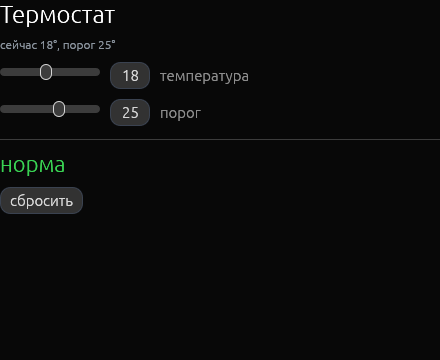

lazr
RAD для Rust, дружелюбный к ИИ. Экран описывается моделью — строчными формами или
S-выражениями, — а lazr собирает из неё настоящий проект на egui/eframe и проверяет его
запуском. Rust остаётся HAL: окно, память, пиксели.

Три шага, без драга мышью
Lazarus даёт человеку холст. Агенту нужен семантический способ менять интерфейс и проверяемый результат — поэтому каждая правка это именованная операция над моделью.
Формы вместо пикселей
Одна строка — один виджет. Ошибка возвращается данными: строка, код, подсказка. Типы проверяются до компиляции.
Настоящий Rust
Генерация детерминированная: одна модель — один и тот же текст. Сгенерированный код живёт в git и диффится.
Три факта
verify = собралось + нарисовалось без окна + все действия кнопок вызваны и не упали.
Скорость, замеренная, а не обещанная
Замеры на этой машине, обычный диск, тёплый общий кэш сборки. Первая сборка egui — 17 с, дальше всё измеряется миллисекундами.
| модель → код | 3 мс |
| код → собранное приложение | 751 мс |
| правка модели → пересборка | 410 мс |
| проверка действий | 89 мс |
| все тесты lazr | 18 мс |
Кому это нужно
Агентам и операторам
Интерфейс правится командами и проверяется без человека:
verify печатает эффект, а не «ok».
Тем, кто пишет GUI на Rust
Никаких ui.horizontal(|ui| {{ … }}) на каждую
строку раскладки — строка модели вместо блока.
Внутренним инструментам
Пульты, панели, формы, «админка на один вечер» — без Electron и без npm.
Тем, кто не хочет ставить лишнее
Один бинарь, ноль зависимостей в инструменте, генерация без сети.
Одна модель, два синтаксиса
Строчные формы удобны для точечных правок, S-выражения — когда модель строит программа: нет проблем с кавычками, отступами и порядком флагов, одна форма — одна операция.
window "Счётчик" 420x260 state count int 0 label "Нажатий: {count}" {size:22, bold, color:#e5484d} button "Плюс" do count += 1 {icon:play, key:ctrl+plus} vbox checkbox "Согласен" -> agree grid 2 label "а" label "б"
(window "Краски" 900 720) (state tool string "кисть") (state size float 4) (rust-field strokes "Vec<Stroke>" "Vec::new()") (vbox :pad 12 (hbox (label "Краски" :size 20 :bold true) (custom toolbar)) (hbox (custom actions) (slider "толщина" :bind size :range (1 40))) (custom canvas))
Раскладка числами, тема строкой
Место фиксированного размера, абсолютные точки, якоря от правого и нижнего края — как в форме Lazarus, только в тексте. Тема — одна строка на модель.
(place 800 480 (label "Пульт" at 16 10 size 200x28 :size 22) (vbox :box 240 170 :at 16 50 (custom card)) (button "Пересчитать" at 16 436 size 160x32 :icon "refresh" :key "ctrl+r") (button "Очистить" anchor right bottom at 16 16 size 130x32))
(theme dark accent "#388bfd" font 15 spacing 10 round 8) ; компилируется в fn apply_theme(ctx): ; Visuals::dark() + акцент + шрифт + отступы ; + CornerRadius::same(8) (window "Пульт" 820 560)

Упаковка в одну команду
Бинарь, иконка из логотипа, ярлык .desktop и архив — в dist/.
Установщика и подписи нет: это названная граница, а не забытая галочка.
Демо: Краски
Полноценный Paint, целиком описанный моделью: восемь инструментов, палитра, толщина, отмена
по Ctrl+Z, сохранение и открытие через системный диалог, горячие клавиши 1–8. Заливка закрашивает только
внутренность замкнутого контура: холст — растр, стены строятся по всем штрихам, обход в ширину от точки клика.
Путь к файлу виден в модели, F5 пишет, F6 читает, F7 зовёт диалог —
поэтому и запись, и чтение проверяются скриптом, а не «на глаз».
Что внутри
Всё это — операции модели, а не «сгенерируй файл целиком».
Раскладка
vbox, hbox, grid N,
scroll, space и place с абсолютными точками, размерами и якорями
right/bottom.
Тема
Тёмная или светлая основа, акцент, шрифт, отступы, скругления — одной строкой модели; применяется и в окне, и в головном кадре.
Проверка эффекта
Скрипты check-paint.py и
adversarial-paint.py: контур → заливка → пиксели, диалоги, файл, отмена-после-отмены,
resize. Вердикты works/broken, а не «покликал — не упало».
Упаковка
lazr package: бинарь, icon.png из логотипа,
ярлык .desktop, tar.gz. Без установщика — его нет честно, а не забыли.
Стили
Размер, жирность, цвет (#rrggbb или имя), отступы,
растяжение по ширине.
Иконки
40 имён без внешних зависимостей: save, open,
undo, pencil, ellipse, fill…
Горячие клавиши
:key "ctrl+s", F2,
Ctrl+Shift+Z — срабатывают без фокуса на кнопке.
Свои виджеты
rust widget + custom: произвольный egui-код
там, где DSL кончается, и он тоже проверяется кадром.
Своё состояние
rust field: любые типы Rust в состоянии — списки,
структуры, цвета — с начальным значением.
Язык действий
if, сравнения, арифметика, инкременты; проверка типов
по полям модели до cargo build.
MCP
Восемь инструментов JSON-RPC: создать, добавить, показать, собрать, прогнать кадр. Ошибки — данными, чтобы агент исправился сам.
Честно о границах
Что пока не сделано
- Раскладка как в Lazarus — абсолютные точки и два якоря уже есть; нет процентов от контейнера, привязок к краям как в Qt и пересчёта формы при ресайзе.
- Стили как в CSS — тема строкой (акцент, кегль, отступы, радиус) есть; шрифтов из файлов, теней и фоновых картинок нет.
- Сложные обработчики — условия, арифметика и списки есть; вызовов функций нет: всё сверх
этого уходит в
rust widget, и тогда это уже не модель. - История модели — git есть, встроенного undo/веток модели нет.
- Упаковка — нет установщика и подписи бинаря: есть
.desktop, иконка и архив. - Свой виджет в живом режиме —
customэто Rust-код, поэтомуlazr liveрисует честную заглушку «нужна сборка». - Шаблон строки списка — строка списка сейчас текст с «✖»; свой шаблон (чекбокс, кнопки) в планах.
Демки
Каждая демка — файл модели, и каждая проверена скриптами, а не «на глаз».
Краски
Восемь инструментов, палитра, отмена, заливка контура, сохранение и открытие через системный диалог.
examples/paint.lispПульт
Абсолютная раскладка: три карточки, журнал, кнопки по углам, якорная подсказка.
examples/dashboard.lispСмета
Арифметика в обработчиках: (set! total (* total 2)),
ползунок шага.
examples/calc.lispНастройки
Светлая тема, чекбокс, слайдер, поле ввода, сброс через
do.
examples/settings.lispДоступ
Сравнение строк и панели по условию: when code == "42".
examples/gate.lispТермостат
Числа и пороги: панели «жарко»/«норма» через when … else.
examples/thermostat.lispЧек-лист
Шаблон строки: {item}, своя кнопка «убрать»,
начальные элементы через запятую.
examples/checklist.lispЗадачи
Список строк: append, remove,
clear, поле ввода и счётчики.
examples/todo.lispВикторина
Счёт и число попыток, несколько действий в кнопке.
examples/quiz.lispЖивая модель
Витрина рантайма: правишь файл — окно следует.
examples/live-demo.lisp

when … else